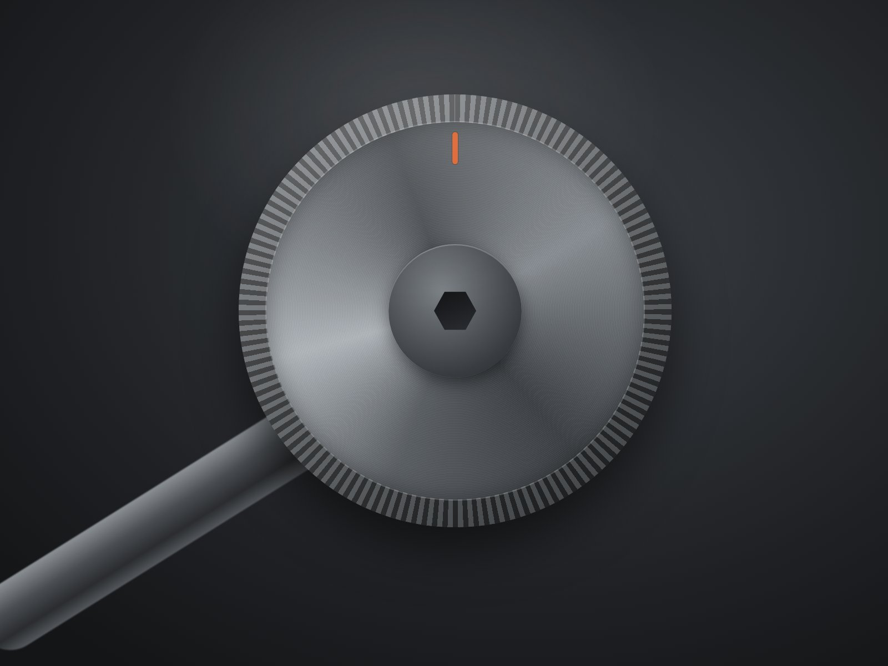
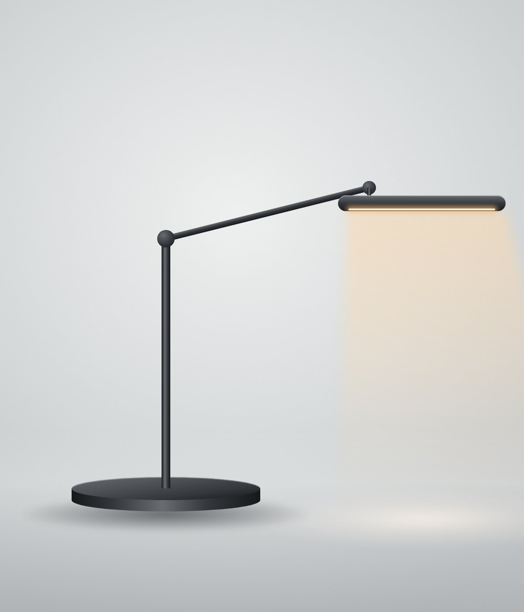
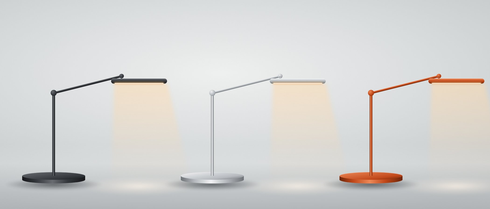

다이얼 하나로 충분합니다
돌리면 밝기, 누른 채 돌리면 색온도가 바뀝니다. 앱도 리모컨도 없고, 마지막 설정은 전원을 꺼도 기억합니다.

벼리 스튜디오는 서울 성수동의 작은 조명 공방입니다. 밤마다 원고를 쓰던 창립자가 눈이 덜 지치는 조명을 찾다가 2019년에 직접 만들기 시작했습니다.
L1은 4년 동안 만든 시제품 31개 가운데 마지막 모델입니다. 알루미늄 덩어리를 깎아 만든 몸체는 나사 네 개로 분해되고, 광원은 따로 교체할 수 있습니다.

돌리면 밝기, 누른 채 돌리면 색온도가 바뀝니다. 앱도 리모컨도 없고, 마지막 설정은 전원을 꺼도 기억합니다.
CRI 97
종이의 흰색, 잉크의 검정, 사진 속 피부색이 자연광 아래에서 보던 색으로 보입니다.
LED를 헤드 안쪽 14mm 깊이에 숨기고 확산 렌즈를 겹쳤습니다. 앉은 눈높이에서 광원이 보이지 않습니다.
광원 모듈은 5만 시간 뒤 직접 교체할 수 있습니다. 교체 부품은 출시 후 10년 동안 공급합니다.
| 광원 | 교체형 LED 모듈 |
|---|---|
| 조도 | 1,050 lx (40cm 거리) |
| 연색성 | CRI 97, R9 92 |
| 깜빡임 | 없음 (DC 정전류 구동) |
| 소재 | 6063 알루미늄 절삭, 아노다이징 |
|---|---|
| 높이 | 420-610mm |
| 팔 길이 | 480mm |
| 베이스 지름 | 180mm |
| 헤드 회전 | 좌우 270°, 상하 90° |
| 입력 | USB-C PD 20V 3A, 어댑터 포함 |
|---|---|
| 대기전력 | 0.3W |
| 케이블 | 1.8m 패브릭 케이블 |
| 보증 | 3년, 부품 공급 10년 |

무광 흑색 아노다이징. 어두운 상판이나 모니터 곁에 잘 어울립니다.
389,000원
비드 블라스트 후 투명 아노다이징. 알루미늄 본래의 색입니다.
389,000원
800대 한정 생산. 다이얼 눈금과 같은 주황색으로 전체를 마감했습니다.
429,000원
모든 에디션은 성수 쇼룸과 공식 온라인 스토어에서 판매하며, 전국 무료 배송입니다.
평일 오후 2시 전에 주문하면 당일 출고하며, 보통 1-2일 안에 받으실 수 있습니다.
헤드를 수평에서 15° 이상 앞으로 기울이면 빛이 책상 면에만 떨어져 화면 반사가 생기지 않습니다.
헤드 아래 나사 두 개를 풀고 모듈을 빼낸 뒤 새 모듈을 끼우면 됩니다. 교체 모듈은 49,000원이며 전용 드라이버가 함께 들어 있습니다.
받은 날부터 30일 안에는 사용 여부와 관계없이 무료로 반품할 수 있습니다.
어댑터는 100-240V를 지원합니다. 콘센트 모양에 맞는 플러그 변환기만 있으면 됩니다.
세 가지 에디션을 모두 켜 두고, 어두운 방에서 색온도를 비교해 볼 수 있습니다.